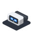

Go for Meta Quest runs Go programs on the Meta Quest 3: a picture in each eye, a 3D scene that stays put in your room as you walk round it, and the controllers in your hands.
It is the headset’s side of the family: the program’s loop, the controllers, and the tools that turn a Go program into a package the headset installs. Go Renderer draws, and talks to the headset through OpenXR, the open standard most headsets speak. Programs are built with the ordinary Go compiler and Android’s NDK: no game engine, no Java.
🚧 A first step. The programs build, and their tests pass on a computer, but nothing has run on a headset yet. What was checked says exactly what.
Pick the line that sounds like you.
| If you… | Read | Time |
|---|---|---|
| are new and want a program in the headset | 🥽 The quest: a cube in your room, then an island to walk, in 5 levels | 1 hour |
| want to know what each piece does and what you need | What is where | 10 min |
The menu on the left (or the files in docs/) follows this order.
Start
See what is where.
| Word | What it means |
|---|---|
| Go | A programming language. To try these projects you install it once, from go.dev, and type go run … in a terminal. |
| Terminal | The window where you type commands: Terminal on macOS and Linux, PowerShell on Windows. |
| Repository | A project’s folder of files, kept on GitHub. git clone <address> copies it to your computer. |
Package (.apk) |
An Android application in one file. The headset runs Android underneath, so its programs are packages too. |
| adb | Android’s tool to talk to a device over a cable: install a package, start it, read its log. |
| OpenXR | The open standard for headsets: it tells a program where the head and the hands are and takes a picture for each eye. |
| Pose | Where something is and which way it faces: a position in metres and a rotation. |
| Quest | The tutorial of these docs (not the headset!): short levels, each ending with something that works and an achievement. |
Go for Meta Quest is one of a family of small projects that work together:
| Project | What it does |
|---|---|
| Go Renderer | draws 3D scenes and flat interfaces |
| Go UI | buttons, panels and whole applications |
| Go UI for Android | Android apps that look like Android’s own |
| Go Sound | sound and music |
| Go Scene Builder | 3D scenes from a flat map |
| Go Simulator | simulations that change a scene |
| Go Terrain Simulator | ground shaped by rivers |
| Go Climate Simulator | weather and biomes |
| Go Flora Simulator | forests that grow |
| Go Urban Simulator | towns that grow |
| Go Motion Simulator | a scene that moves |
| Go for 3DS | Go on the Nintendo 3DS |
| Go for Meta Quest (this one) | Go on the Meta Quest 3 |
⚠️ All of them are educational experiments, written with an AI assistant and pending review by their author: good for learning and playing, not for production.